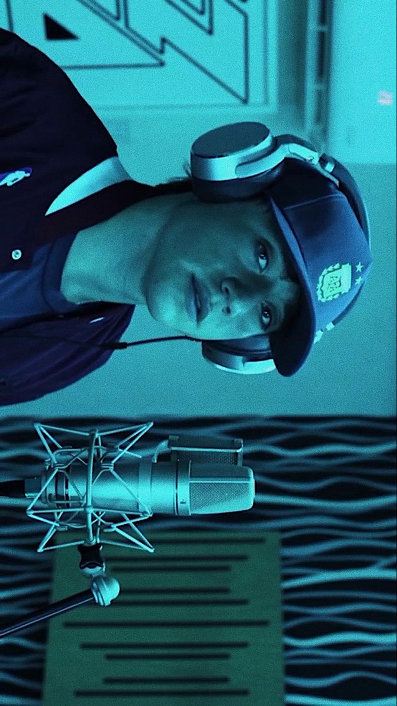

Paulo Ezequiel Londra
Paulo Londra es un reconocido cantante, compositor y rapero argentino, nacido el 12 de abril de 1998 en la ciudad de Córdoba, una de las principales urbes del país sudamericano. Desde sus inicios en el mundo del entretenimiento, Londra se ha destacado por poseer un estilo musical único y auténtico, que fusiona con soltura y creatividad diversos géneros como el trap, el rap, el reggaetón y el pop urbano. Esta versatilidad musical ha sido clave para su éxito, permitiéndole traspasar fronteras y consolidarse como una figura influyente dentro de la escena musical tanto de América Latina como a nivel mundial. Uno de los aspectos más notables de su propuesta artística es la forma en que aborda sus letras. A diferencia de muchos otros artistas del género urbano, cuyas composiciones suelen estar marcadas por temáticas explícitas o violentas, Paulo Londra eligió desde el principio un enfoque distinto, más introspectivo y positivo. Sus canciones suelen tratar temas relacionados con los sentimientos, la superación personal, la vida cotidiana, la amistad sincera, la familia, e incluso aspectos espirituales, lo que le permitió conectar profundamente con un público amplio y diverso que valoraba esa mirada honesta y cercana de la realidad.
Su incursión en el mundo del freestyle fue el punto de partida para lo que sería una carrera meteórica. Londra comenzó a ganar notoriedad en competencias de batallas de improvisación, especialmente en "El Quinto Escalón", una de las ligas de freestyle más emblemáticas y populares de Argentina durante la segunda mitad de la década de 2010. En ese escenario callejero, repleto de jóvenes talentos, Paulo se destacó rápidamente por su capacidad lírica, su carisma natural y, sobre todo, por su estilo melódico que rompía con la agresividad predominante del formato. Su presencia en estas batallas no solo le brindó visibilidad en el ambiente del rap local, sino que también captó la atención de miles de jóvenes que veían en él una figura con la que podían identificarse. Con una creciente base de seguidores en redes sociales y plataformas digitales, el siguiente paso fue profesionalizar su carrera. Hacia finales de la década de 2010, Paulo Londra logró dar el salto al mercado musical mainstream. Firmó contratos con productores y sellos discográficos que potenciaron su talento y le permitieron lanzar canciones de calidad internacional. Su estilo fresco, juvenil y honesto se reflejaba en cada una de sus producciones, muchas de las cuales rápidamente se posicionaron en los primeros lugares de los rankings musicales en distintos países.